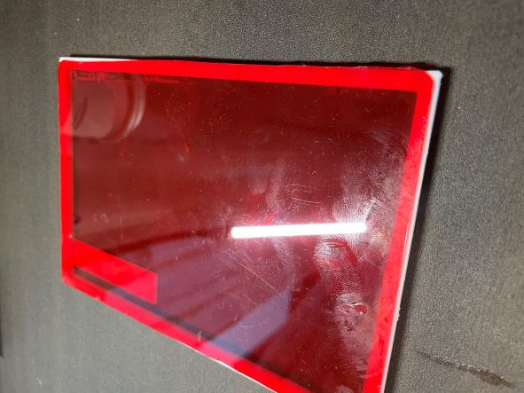
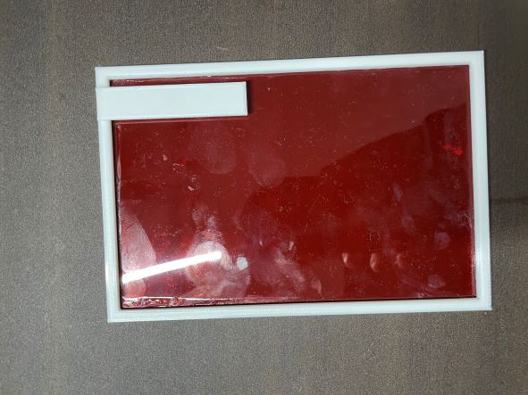
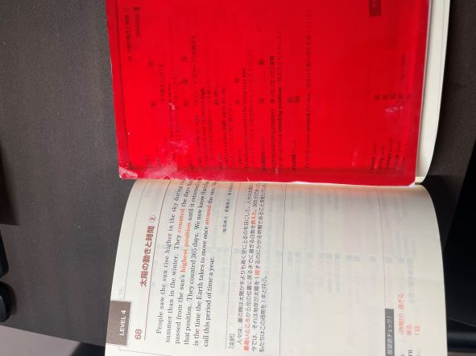

第5回
テーマ
電車の中で勉強する学生
今回班のメンバーで決めたテーマは電車の中で勉強する学生になったので、そのようなときに役に立つものを考えた。
私は、電車の中で赤シートを使って暗記系の勉強をすることが多かったので、そのようなときに使えるものを作りました。
完成品

プロトタイプの反省を生かして、もっと広く隠し、赤シートを固定することで問題点を改善することができました。
裏面はこのようになります。

使い方

このように、見たいページを挟むことで安定して暗記したい個所をかくして、勉強することができます。
感想
思ったより、使いやすい物ができたので、自分が勉強するときも使いたいと思った。
しかし、他の人はもっとクオリティの高い作品を作っているので、しっかりとFusionの使い方をうまくしたい。